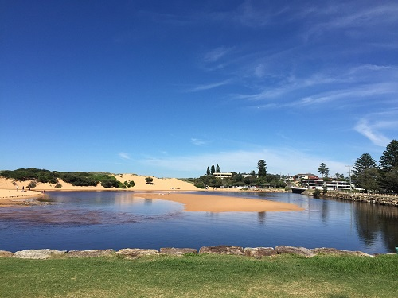

Having 12 years of experience in the education field, I work as the first point of contact for students and parents. I specialize in communicating and building relationships both internally and externally. My high-quality service delivery gives me good feedback and makes the team run smoothly.
Skills
- Counselling
- Interpersonal skills
- Communication
- Conflict resolution
- Time management
- Multi-tasking
- Detail oriented
- Bilingual (Mandarin and English)
- Administrative skills
- Customer Service